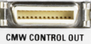

CMW CONTROL OUT Connector (Optional)
 |
This connector is used for control of an R&S CMWS. The interface is included in option R&S CMW-B668A. The option carrier R&S CMW-B660A is also required.
An appropriate cable is included in the delivery. Connect it as described in the R&S CMWS user manual.